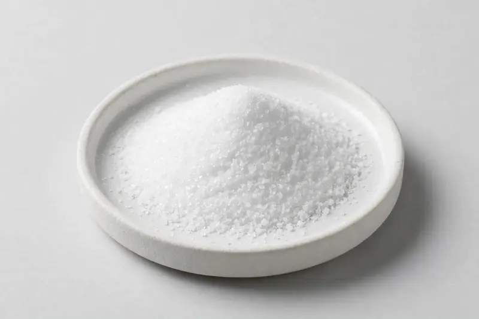

Glucosamine sulfate powder for joint-support-positioned formulations, available in shellfish-derived and vegetarian fermentation grades, confirmed against your target spec.

Overview
Glucosamine sulfate is a well-established joint-support ingredient used in capsule, tablet and powdered supplement formats, often combined with chondroitin, MSM or collagen. Buyers typically request either shellfish-derived or vegetarian fermentation grades, and the choice often hinges on label and market requirements. As a Xi'an trading company, we source through partner producers and confirm feasibility after receiving your target specification.
Specifications below reflect commonly requested options in the market — not a stock list. Share your target spec and we'll confirm exactly what we can supply, honestly.
| Specification | Details |
|---|---|
| Botanical identity | Glucosamine sulfate powder (shellfish-derived or fermentation route) |
| Marker compound | Commonly requested spec grades: shellfish-derived and vegetarian fermentation grades; actual specs confirmed on inquiry |
| Appearance | Fine powder, color typical of the extract |
| Mesh size | Typically 80–100 mesh (confirm per inquiry) |
| Testing | COA/TDS arranged on request; scope agreed per your spec |
Applications
Documentation
We don't claim in-house labs or certifications we don't hold. COA and TDS documents can be arranged on request, and testing scope is agreed against your specification before supply.
FAQ
Related products
L-Citrulline
Key marker: 99%+
View specs →Bromelain (Ananas comosus)
Key marker: 2000-3000 GDU/g
View specs →Papain (Carica papaya)
Key marker: USP activity units
View specs →magnesium citrate
Key marker: Magnesium Content
View specs →L-ascorbic acid
Key marker: Ascorbic Acid Content
View specs →Send your target spec and volumes — we'll respond with a tailored quotation.
Request a Quote